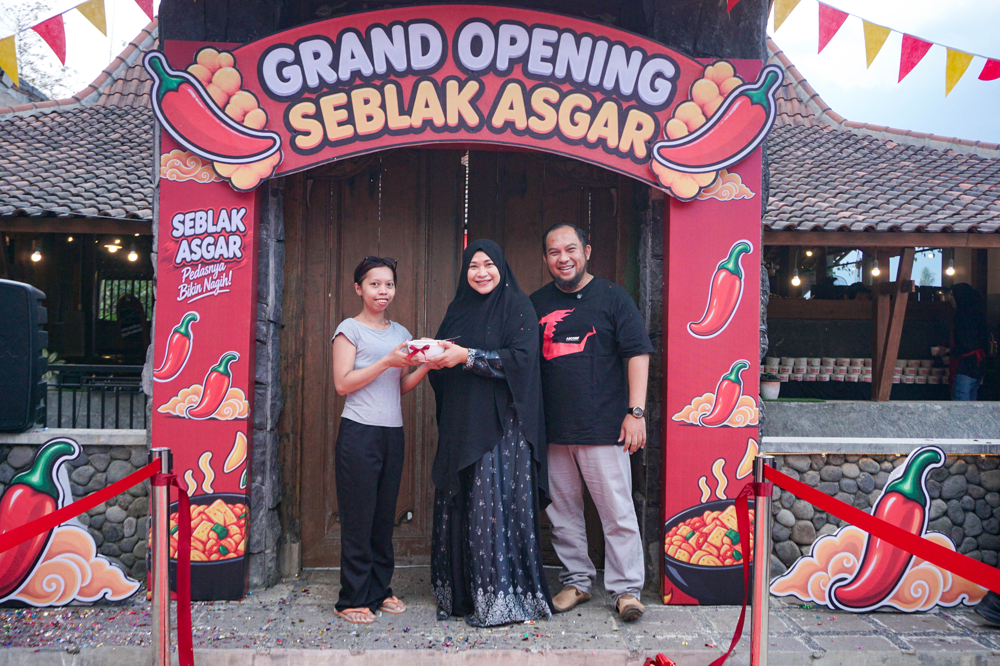

GALERIRuang, orang, dan perjalanan
Cerita di balik
setiap pertemuan.
Dokumentasi kegiatan, kolaborasi, dan gagasan yang tumbuh bersama Coach Ridwan Abadi.
06 dokumentasi
Program bersama Kemenparekraf RI
Kolaborasi dalam program pemberdayaan dan penguatan usaha kreatif.

Belajar dan bertumbuh bersama
Suasana kegiatan pengembangan kapasitas bersama para peserta.

Program MDP
Penguatan kapasitas manajerial dan kesiapan tim untuk bertumbuh.

Ruang belajar bersama
Berbagi pengalaman dan membangun jejaring dalam komunitas.

Sukses Berkah Community
Ruang belajar, jejaring, dan penguatan semangat kewirausahaan.

Pembukaan Seblak Asgar
Momen pembukaan usaha kuliner Seblak Asgar bersama tim.
Setiap dokumentasi menyimpan cerita tentang proses dan orang-orang di dalamnya.
Kembali ke halaman profil